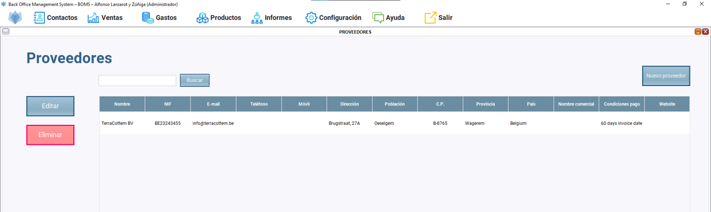
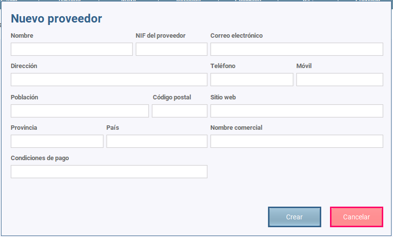
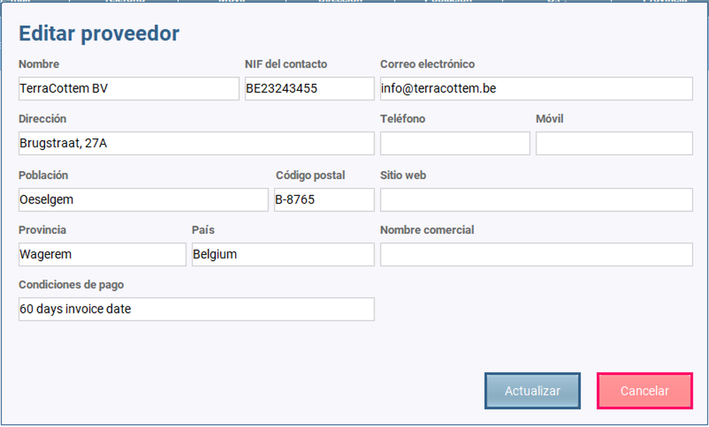
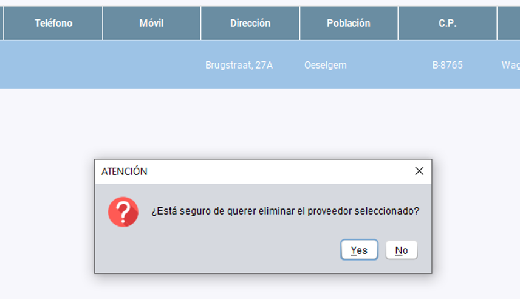
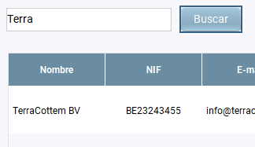

Una vez que hacemos clic en Contactos/Proveedores se abre el escritorio de proveedores.
Podemos observar una tabla con todos los proveedores creados y tres botones: uno para añadir más proveedores, uno para editarlos y otro para eliminarlos.

El botón "NUEVO PROVEEDOR" hace que se abra un diálogo en el que insertaremos la información relevante del proveedor. Es necesario añadir al menos:

El botón "EDITAR" hace que se abra un diálogo en el que añadiremos nueva información del proveedor o modificaremos lo que sea necesario.
Para ello antes es necesario seleccionar la fila en la que se encuentra el proveedor que queremos editar.

El botón "ELIMINAR" hace que se elimine el proveedor seleccionado de la tabla previa advertencia de seguridad por si finalmente no queremos hacerlo.
Para ello antes es necesario seleccionar la fila en la que se encuentra el proveedor que queremos eliminar.

El botón "BUSCAR" nos permite buscar los proveedores que están en la base de datos. La búsqueda podemos hacerla:
Únicamente es necesario introducir algunos caracteres y pulsar en el botón "BUSCAR" para que lo encuentre sin problemas.
